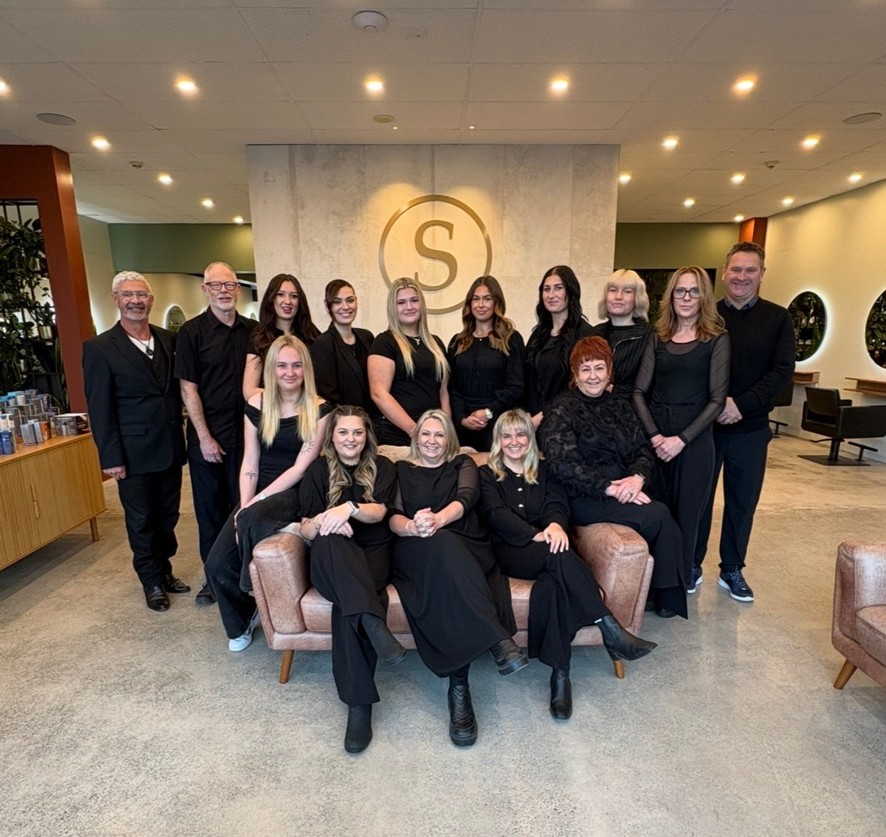
This site gathers the evidence behind the written entry. Each tab matches a section of the submission, with the financial and social reports, the letters of support and the salon gallery included directly on the page and the videos playing in place.
Download the full written entryThe NZHA rules confirm entries may be submitted digitally as a document, booklet or video presentation. Everything here supports verification of the written entry and is shared in confidence.
The full financial report is included below, covering six-year turnover, profit, cost structure, the five scored measures, the company accounts against the dashboard, and the benchmark against the national panel of nineteen salons.
Behind the salon experience sits a connected set of operating systems that turn good intentions into consistent daily practice. Structured consultation and client matching, the My Salon CEO performance platform with its AI coach Jemima, and Vish colour management together give Surreal the discipline of a much larger business while keeping the personal feel of an independent salon. The notes below describe what each system does, with supporting screenshots still to be added.
Every new client completes a structured questionnaire covering hair history, lifestyle and the result they are working towards, and is matched to a stylist on suitability rather than simply who is free. Detailed consultation forms and systemised service protocols mean the same standard is followed at every chair, while a team skills survey and individual stylist profiles keep the matching accurate as the team grows.
My Salon CEO gives every team member a live dashboard on their phone, with a weekly KPI traffic-light system that shows at a glance where they are tracking. Where a measure slips, the platform responds automatically with a short coaching video, and a transparent pay-level pathway shows exactly what a stylist needs to reach the next step. Jemima, the platform’s AI business coach, answers day-to-day questions and helps the team read their own numbers.
Vish weighs and records every colour formula as it is mixed, so pricing reflects exactly what is used and colour is reproducible from one visit to the next. Over time the data has sharpened pricing accuracy and reduced waste, supporting both the salon’s margins and its sustainability commitments.
Surreal is introducing SocialTap, a set of branded smart dots placed throughout the salon. With a single tap they connect the salon to its wider digital world, bringing the Surreal experience together into one seamless system for clients and the team alike.
Placed at the stylist’s side of the station, giving the team quick access to the everyday tools that support each service.
Placed within easy reach of the client, connecting them to booking and the salon’s social channels in a single tap.
The film element of the entry. The salon and its team introduce the space and the culture in their own words, with a walkthrough of the Christchurch salon and the client journey through it.
The salon film, introducing the team, the space and the culture.
A walkthrough of the Christchurch salon and the client journey.
Surreal both invests in training and creates it, hosting advanced education and holding roles across the wider industry. Recognition and event photography appears in the Salon Gallery.
In May 2026 our team took part in a professional development workshop titled Specialist by Design, delivered in partnership with Business Builds. The session was designed to help each member of our team define their area of specialism, articulate what makes their work distinctive, and build the confidence to communicate that value to clients.
Over two hours, the team worked through four guided exercises, each one building on the last. We began by considering how we are each perceived by our clients and colleagues, then moved into mapping our individual strengths and passions using a skill and passion quadrant. From there, each stylist developed a signature service package grounded in the work they do best, before finishing with a practical session on how to introduce add-ons and recommendations to clients in a way that feels natural rather than sales-driven.
What made the workshop genuinely innovative was the technology behind it. We were the first salon in New Zealand to use NeuroTap, a tap-to-automate system that allowed each stylist to complete their responses directly from their phone by tapping a dot on a printed workshop canvas. Every response fed instantly into our staff database, forming the foundation of each stylist’s professional profile. This removed hours of manual data entry and gave us a structured, usable record of every team member’s specialism, service offering, and approach.
The outcome has been a team that is clearer about the value they each bring and better equipped to attract the clients who are the right fit for their skills. The profiles created during the session now underpin how we present our team, helping clients find the stylist best suited to their needs. The workshop reflected our ongoing commitment to investing in our people, embracing new technology, and continually raising the standard of the experience we offer.
Surreal gives back through people, from charitable partnerships to opening the salon floor to young people and students.
We are excited to share the beginning of a meaningful new relationship between Surreal and Youth Hub. Youth Hub is the first of its kind in Aotearoa, bringing together safe and supported housing for young people at risk of homelessness with wraparound health, education and social services, alongside welcoming spaces where all young people can feel a sense of belonging.
As part of the partnership, Surreal provides complimentary haircuts and hair services for young people accessing Youth Hub, helping to build confidence, self-esteem and a sense of care and dignity. It is also a valuable opportunity for our apprentices to develop their skills while making a genuine difference. Our suppliers have generously donated shampoo and conditioner sachets, made into small welcome packs left at the hub.
From the Manager of Social Services: “Just wanted to say a huge thanks for today. I saw the young people with their lovely new haircuts when they came back to the hub, they were glowing. Such a lovely opportunity for them, and who knows, some might become interested in hairdressing now.”
From the Manager of Housing: “Thank you again for welcoming some of our young people into your salon and making them feel so special. We really appreciate your generosity and the opportunity you have given them.”
Supporting our local community matters to us. Since 2022, Full Bellies Trust has provided packed lunches to children in schools across the northwest of Christchurch. Although many of these schools are not classified as low decile, they serve communities with a significant number of families in social housing, and many children arrive at school each day without enough food. Surreal supports the trust through donations and by helping raise awareness across the salon’s channels.
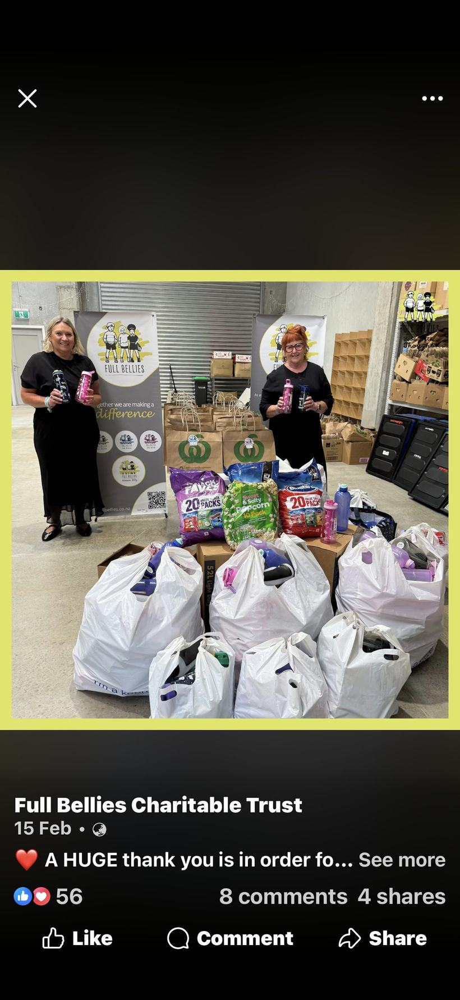
The Cashmere High School careers arrangement, the Ara Institute teaching, and sponsorship of a nationally ranked junior tennis player remain to be evidenced.
Surreal markets its stylists as personal brands and runs a structured social programme alongside CRM and email campaigns to a database of more than 5,500 clients. The full social media report is included below, followed by the Instagram insights.
Surreal is currently recruiting a full-time Marketing and Brand Manager. As the marketing has grown beyond what can be run off the side of the desk, the salon is investing in a dedicated role covering content creation, social media, the CRM and email programme, and overall brand and digital strategy, turning its stylist-led marketing into a properly resourced function.
Every stylist is supported to build their own following while staying aligned to the brand, with Instagram handles and QR codes at the mirrors. The salon runs a minimum of four posts a week including reels and image posts, giving a far larger digital footprint than one salon account could achieve.
Monthly recaps and performance views. Click through one at a time.
Surreal has partnered with Sustainable Salons for six years, recycling ninety-five per cent of salon waste and diverting 2,834kg from landfill since 2021. The team visited the Kilmarnock Enterprises depot to see the operation firsthand, and the films and photographs below record that visit and the salon’s wider sustainability work.
The salon’s sustainability story and the difference the programme has made.
Pip’s testimonial from the tour of the local recycling depot.
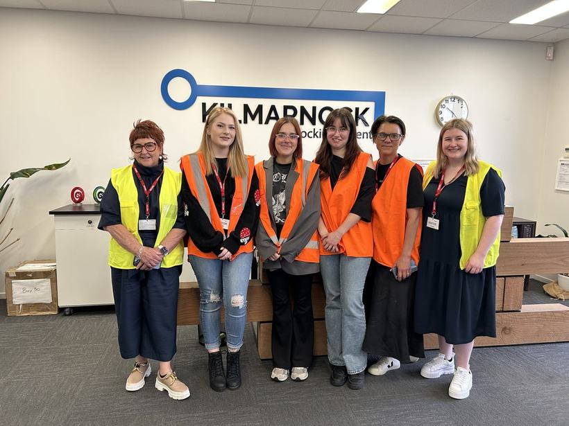
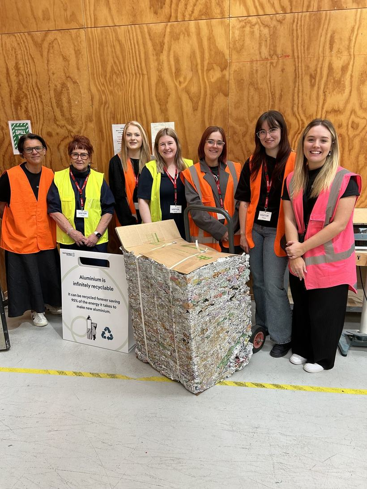
The letters of support for Michelle Marsh and Surreal Hair and Beauty, presented in full, from across the industry, the profession and long-standing clients.
To Whom It May Concern,
I am pleased to support Michelle Marsh, owner of Surreal Hair Salon, for this Hair & Barber New Zealand Award.
Michelle is passionate about our industry and genuinely cares about helping others succeed. She has worked closely with HITO over many years and has had nearly eight apprentices complete their qualifications through her salon in the last four years alone. Her commitment to training and mentoring has made a real difference to the lives of young hairdressers and to the future of our industry.
Michelle leads with professionalism, kindness, and high standards, creating a salon where both clients and apprentices feel valued and supported. She is an outstanding role model and a very deserving candidate for this award.
I am proud to recommend Michelle for this recognition.
Kind regards,
Colette Cleary, Sales and Training Advisor, HITO
To whom it may concern,
I am delighted to provide this reference in support of Michelle Marsh for the New Zealand Hair Awards.
I have been one of Michelle’s clients for around 25 years. During that time, we have both grown professionally and personally, raising our families through many of the same stages of life. Watching Michelle’s journey has been inspiring.
What has always set Michelle apart is her genuine care for her clients. She doesn’t simply provide a hairdressing service, she invests in the people who sit in her chair. Every client is treated with kindness, respect and a sincere desire to help them look and feel their best.
Following my serious accident a couple of years ago, Michelle went out of her way to accommodate my needs, making every appointment as comfortable and accessible as possible. More recently, when I experienced a significant hair issue, she made it her personal mission to find solutions. She researched, planned and reassured me throughout the process, helping to restore not only my hair but also my confidence. Her compassion and willingness to go above and beyond made an enormous difference during a difficult time.
Michelle has also demonstrated remarkable resilience and leadership throughout her career. Following the Canterbury earthquakes, she adapted quickly by establishing a salon in the suburbs so she could continue supporting her clients. As the city recovered, she created a beautiful salon in the Christchurch CBD and has grown it into one of the city’s leading salons. Throughout that growth, she has remained committed to developing her team, embracing innovation and continuing her own professional education. Despite the demands of running a successful business while balancing motherhood and family life, she has never lost sight of what has always been at the heart of her success, genuinely caring for every client.
Impressively, Michelle never stands still. She is continually learning, refining her skills, embracing new techniques and investing in the growth of both her team and her business. She is an exceptional leader who is always looking for new opportunities to improve her salon and create the best possible environment for both her staff and clients. She generously shares her knowledge, mentors her team and fosters the professional growth of those around her.
In my experience, Michelle is a person of exceptional character, professionalism and integrity. Her resilience, commitment to lifelong learning, outstanding leadership and genuine care for both her clients and her team make her an exceptional ambassador for New Zealand’s hairdressing industry. She is highly deserving of recognition through the New Zealand Hair Awards, and I recommend her without hesitation.
Amanda Douglas, long-standing client
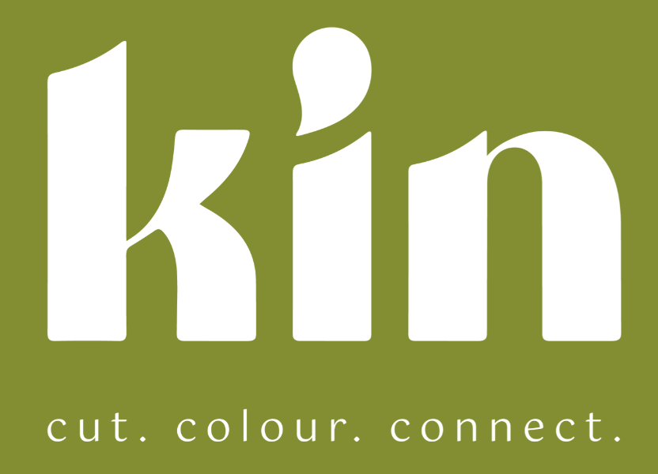
I had the privilege of working for Michelle Marsh early in my career, and she was an exceptional employer.
She always led with fairness, integrity and high standards while creating a supportive environment where her team could grow.
I’m incredibly grateful for the opportunities she gave me, from encouraging me to compete in hairdressing competitions to involving me in catwalk and session styling. She also brought together an amazing team, and some of those colleagues are still close friends today.
Michelle continues to evolve as a respected leader and mentor within our industry. Even now, as a salon owner, she is always generous with her time and advice whenever I face challenges. She has had a huge influence on my career, and I believe she has set the benchmark for salon leadership in both Christchurch and New Zealand.
Danni Dinh, Salon Owner, Kin Hair Christchurch
The entire team at Surreal Hairdressing is deeply committed to the Sustainable Salons program, and the impact they’re creating is real, meaningful and measurable.
Since joining the program in July 2021, the salon team has consistently followed our recycling processes and, in that time, has diverted 2,834kg of salon materials from landfill. This impact is equivalent to providing more than 740 meals for people in need through their foil recycling, and creating 32,000+ combs through their plastics recycling, plus so much more.
The salon and its team are always eager to support our initiatives and get involved with genuine energy and enthusiasm. In 2025, they opened their salon space to host a Sustainable Salons education evening for more than 40 people in Christchurch. Later that year, Pip Nicoll joined us for a tour of our local depot Kilmarnock, which provides meaningful employment opportunities for people with disability, volunteering her time to sort and process ponytail donations that help create wigs for people experiencing medically induced hair loss.
Surreal Hairdressing regularly shares the Sustainable Salons message across its social media channels and through a dedicated sustainability page on its website. Their commitment to innovation is clear, and we applaud this successful salon team for continuing to embed sustainable practices into every part of their business.
We hope you’re inspired by Surreal Hairdressing’s commitment and the meaningful difference they’re making as a Sustainable Salon. The team’s passion for sustainability, not only for the planet, but for the salon industry and its wider community, makes them a benchmark business in our eyes.
Lucy O’Keeffe, Marketing Manager, Sustainable Salons
The salon’s work, team, events, community and recognition. Click any photo to view it larger.
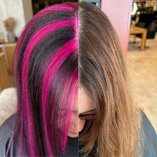
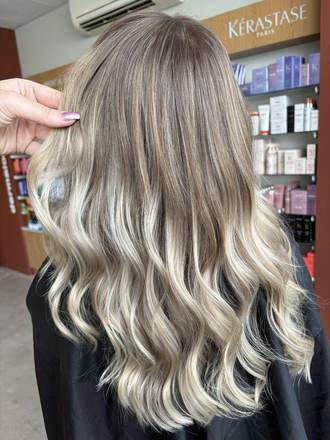
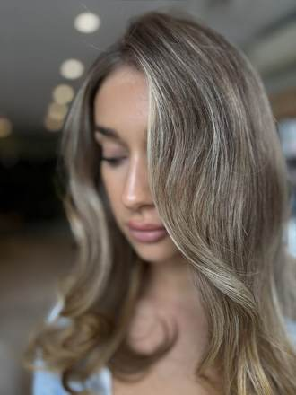
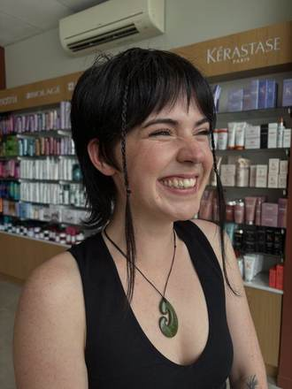
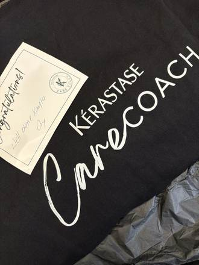
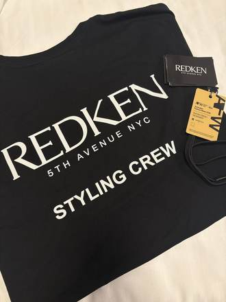
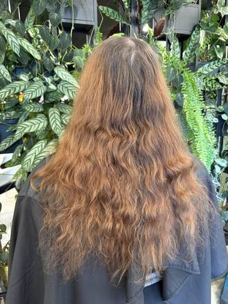
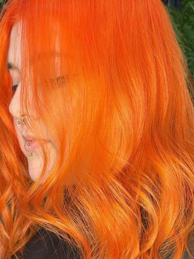
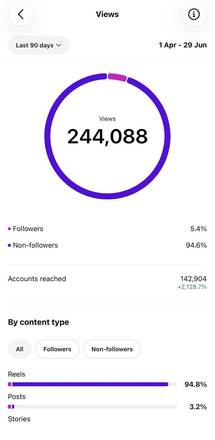
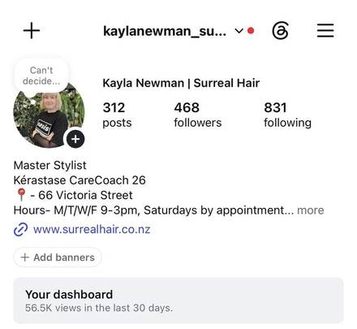
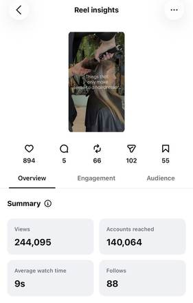
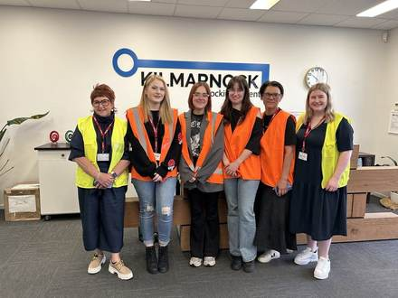
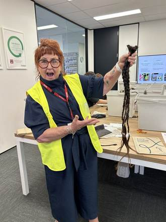
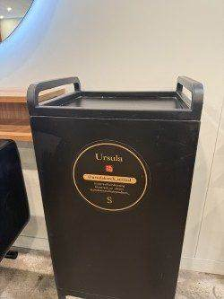
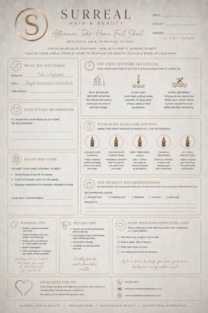
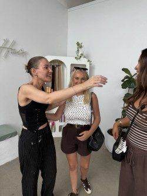
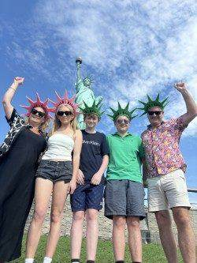
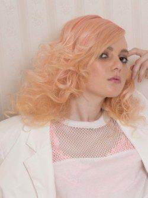
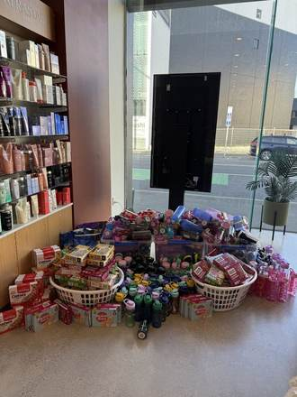
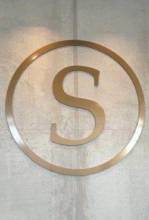
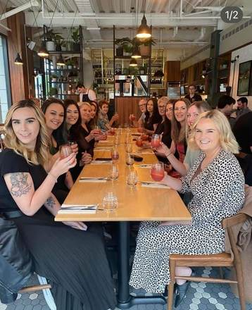
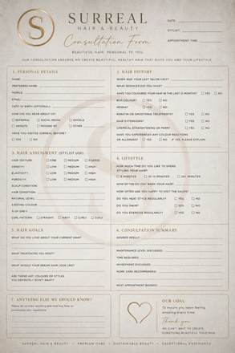
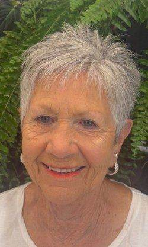
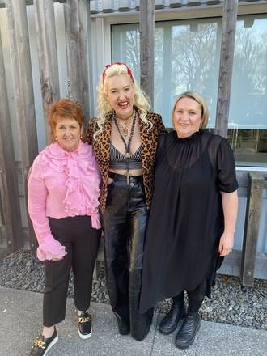
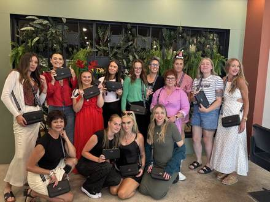
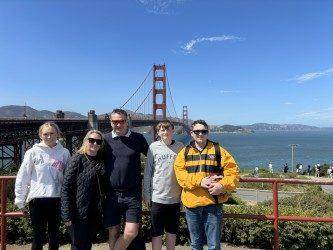
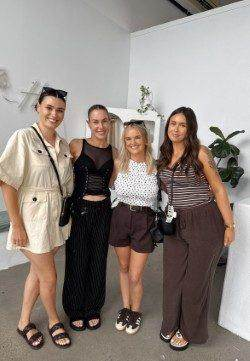
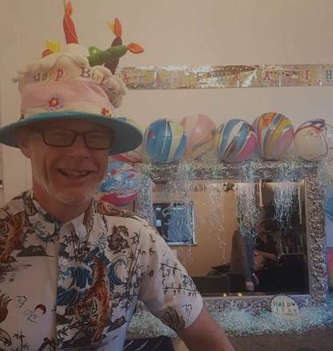
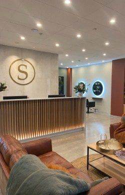
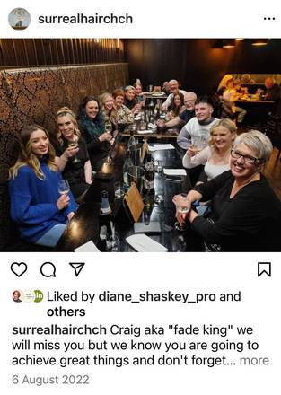